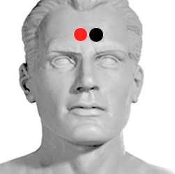

Hipófisis
Pares
hipófisis - hipófisis
hipófisis - suprarrenales

Generalidades:
Provoca Diabetes insípida. La Hipofisis rige la función de las demas glándulas del sistema endocrino, por lo que se ve comprometido el funcionamiento de la tiroides, las suprarrenales, las gónadas. Armoniza la función del hipotálamo.
Puede causar Galactorrea (secreción de leche por el seno).
Si hay tumor benigno buscar la simbiosis de virus con bacteria.
Causa
Se desarrolla después de una lesión en la cabeza o de una cirugía. A veces indica tumor cerebral.